대칭에서 보존법칙으로: 노터 정리와 과학 계산의 설계 원리
작용의 연속 대칭이 운동량과 에너지로 이어지는 이유, 그리고 그 구조를 시뮬레이션·과학 AI·양자계산에 옮길 때의 조건
TECH REVIEW · 2026년 10월 17일 · 물리 원리와 계산 응용
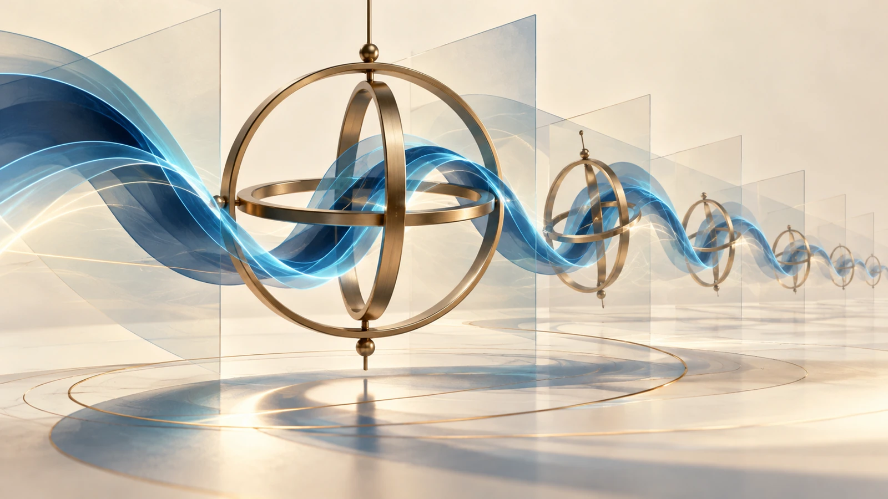
비디오 abstract
3:57 · 한국어용수철 계산과 학습 모형을 통해, 대칭과 보존량을 설계·검증에 쓰는 이유를 설명합니다.
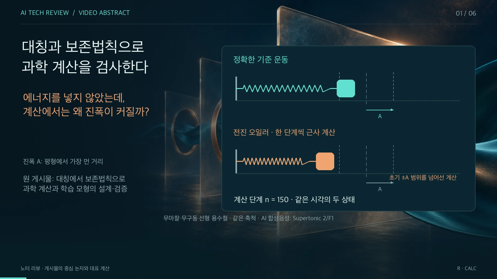
내용 살펴보기
1. 예측이 그럴듯해도 물리적으로 틀릴 수 있다
마찰 없는 수평면에서 이상적인 용수철에 연결한 질점을 놓으면, 질점이 평형 위치를 지날 때는 빠르게 움직이고 가장 멀리 늘어나거나 압축된 곳에서는 잠시 멈춘다. 여기서는 복원력이 변위에 비례하는 선형 용수철을 생각한다. 운동에너지와 용수철의 탄성에너지는 서로 바뀌지만, 강성을 고정하고 외부에서 일을 하지 않는 이 모형에서는 두 에너지의 합이 일정하다. 그런데 같은 운동을 컴퓨터로 계산하면 진폭과 에너지가 조금씩 커질 수 있다. 뒤에서 볼 전진 오일러 계산의 증가는 실제로 열이나 일을 공급한 결과가 아니라 수치 근사에서 생긴 ‘가짜 가열’이다.
분자 시뮬레이션에서도 처음 몇 번의 진동은 잘 맞는데 시간이 지나면서 총에너지가 계속 증가할 수 있다. 에너지가 일정해야 하는 조건을 정했다면, 짧은 구간의 원자 위치가 잘 맞는다는 사실만으로 긴 시간의 계산을 신뢰할 수는 없다. 학습 데이터의 오차가 작은 AI 모델에서도 같은 문제가 생길 수 있다. 무엇을 보존해야 하는지와 계산이 실제로 무엇을 보존했는지를 함께 물어야 한다.
이때 대칭은 유용한 질문을 준다. 분자 전체를 조금 옮겼다는 이유로 내부 에너지가 달라져야 하는가? 같은 배치를 통째로 회전했을 때 에너지는 유지되고 힘의 방향은 함께 회전하는가? 외부 조건이 시간에 따라 바뀌지 않는 닫힌 모형에서 에너지가 계속 증가한다면 무엇이 잘못됐는가?
노터 제1정리는 이런 질문들을 하나의 수학적 관계로 연결한다. 운동 경로 전체에 값을 매기는 작용에 적절한 연속 대칭이 있으면, 운동방정식을 따르는 해에서 보존되는 양을 얻는다. 이 관계를 알면 법칙에 맞는 모형을 설계하고 계산 결과에 생긴 오류를 검사할 수 있다. 먼저 계의 경계와 외부 조건에 맞는 대칭을 정하고, 다음으로 물리 모형과 학습 구조가 그 관계를 따르는지, 마지막으로 수치 계산의 결과에서도 유지되는지 확인한다. 정확한 보존법칙을 가진 모형을 택하는 것과 그 모형을 정확히 배우고 계산하는 것은 각각 확인해야 할 문제다. [2–4]
출발점은 Shalma Wegsman의 Quanta Magazine 기사 「How Noether’s Theorem Revolutionized Physics」다. 2025년 2월 7일 발행된 이 기사는 일반상대론의 에너지 문제와 에미 노터의 1918년 연구를 연결해 설명한다. 공유된 LinkedIn 글은 같은 기사를 다시 소개한 것이다. 아래의 수학과 계산 응용은 원 기사에 관련 원전·연구를 더해 전개한다. [1]
2. ‘바꾸어도 같다’는 말의 정확한 대상
대칭은 언제나 무엇을 바꾸고 무엇을 같다고 보는지 정해야 한다. 원을 회전해도 모양이 같다는 기하학적 대칭과, 실험 전체를 같은 거리만큼 옮겨도 같은 법칙이 적용된다는 물리적 대칭은 연결되어 있지만 대상이 다르다. 이처럼 모든 위치를 같은 만큼 옮기는 변환을 병진(translation)이라 한다. 물리학에서는 개별 사진이나 순간 상태보다 운동을 정하는 법칙과 작용의 변환을 살핀다.
자유입자는 한 방향으로 움직이므로 그 궤적의 그림은 모든 회전에 대해 똑같지 않다. 그래도 자유입자의 법칙에는 특별히 선호되는 공간 방향이 없다. 법칙의 대칭과 특정 해의 대칭을 구분해야 한다. 반대로 지지대에 고정한 용수철에서 질점만 옮기면 늘어난 길이가 바뀐다. 그 질점의 운동만 기술한 모형에는 그 방향의 병진 대칭이 없다. 장치와 환경 중 무엇을 계에 포함했는지가 중요하다. [2,3]
노터 제1정리에서 핵심이 되는 것은 매끄럽게 조금씩 바꿀 수 있는 연속 대칭이다. 이동 거리나 회전각을 조금씩 바꾸는 변환이 대표적이다. 시간 병진은 같은 실험을 언제 시작하느냐에 따라 법칙이 달라지지 않는다는 조건이다. 예를 들어 초시계의 0초를 나중으로 옮겨도, 외부 조건이 일정한 용수철의 운동을 정하는 법칙은 같다. 시간의 진행 방향을 뒤집는 시간반전과는 다른 변환이다. 삼각형의 120도 회전이나 좌우 반사 같은 이산 대칭에는 이처럼 아주 작은 변환에서 출발하는 논법을 그대로 적용할 수 없다. [2,3]
| 변환과 성립 조건 | 대응하는 보존량 | 조건을 바꾸는 예 |
|---|---|---|
| 닫힌 계 전체의 연속 공간 병진 | 총 선운동량 | 고정된 외부 퍼텐셜과의 운동량 교환 |
| 닫힌 계 전체의 연속 공간 회전 | 총 각운동량 | 외부 토크 또는 고정된 방향을 갖는 장 |
| 작용의 시간 병진 | 해밀토니안에 해당하는 에너지 | 시간에 따라 바꾸는 외부 구동 |
| 물질장 전체의 복소 위상에 같은 각도를 더하는 전역 위상 회전 | 해당 이론의 전하 | 어떤 위상 대칭인지와 상호작용을 확인해야 함 |
표는 변환의 이름보다 어떤 대상을 함께 바꾸는지를 읽어야 한다. ‘전체’는 핵심 조건이다. 외력이 없고 두 입자의 상호작용 퍼텐셜이 상대 위치에만 의존하면, 한 입자의 운동량은 계속 바뀌어도 둘의 총운동량은 일정하다. 작은 부분계의 관측량이 변했다는 것만으로 보존법칙이 실패한 것은 아니다. 이제 작용에 대한 대칭이 어떻게 이런 일정한 양을 만드는지 살펴보자.
3. 작용에서 보존량이 나오는 짧은 유도
입자의 위치나 회전각처럼 계의 배치를 나타내는 일반화 좌표를
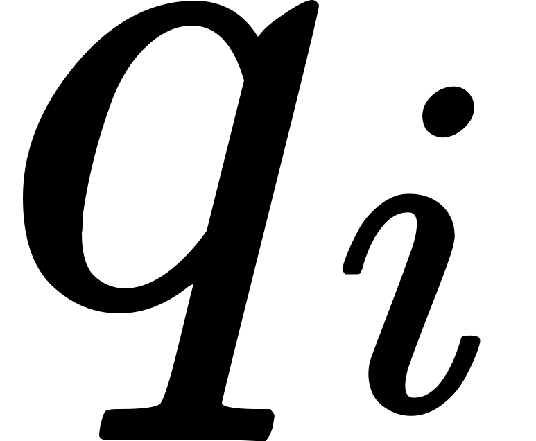
, 그 시간 미분을 라 하자. 라그랑지안
라 하자. 라그랑지안  는 운동을 정하는 함수이며, 익숙한 질점계에서는 운동에너지와 퍼텐셜에너지의 차이
는 운동을 정하는 함수이며, 익숙한 질점계에서는 운동에너지와 퍼텐셜에너지의 차이 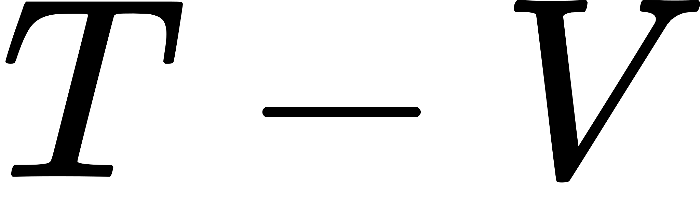
로 쓴다. 작용(action) 는 후보 경로를 따라
는 후보 경로를 따라 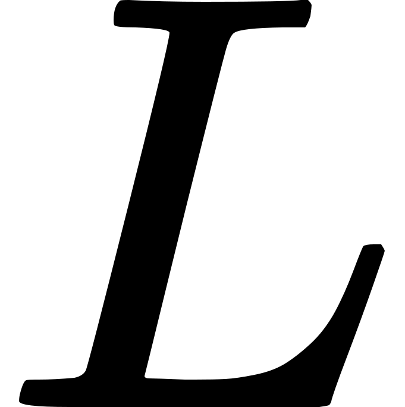
을 시간에 대해 적분한 값이다. 같은 시작과 끝을 잇는 경로라도 중간의 위치와 속도가 다르면 작용은 달라진다. 의 단위는 에너지,의 SI 단위는 J·s다.
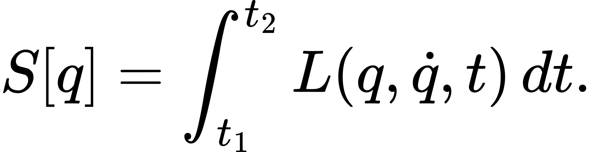
실제 운동은 끝점을 고정한 허용된 작은 경로 변형에 대해 작용의 일차 변화가 0이 되는 조건을 만족한다. 이를 작용이 정류한다고 말하며, 작용이 언제나 최소라는 뜻은 아니다. 이 조건에서 오일러–라그랑주 방정식을 얻는다. 좌표 에 대응하는 정준 운동량(canonical momentum)
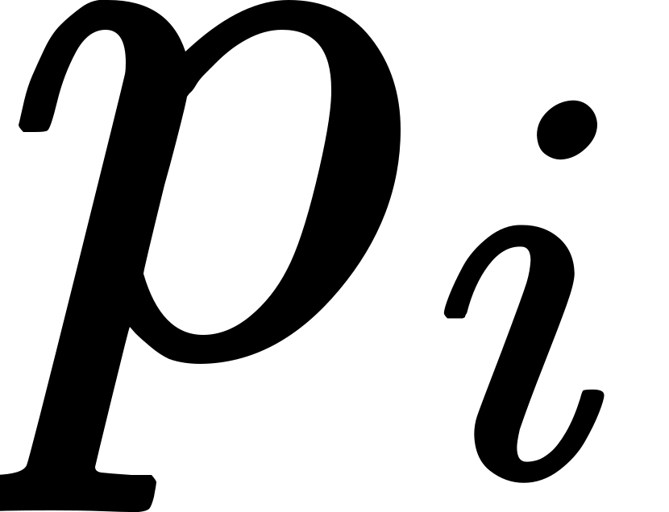
는 을 속도로 미분해 정의한다. 단순한 용수철 질점에서는 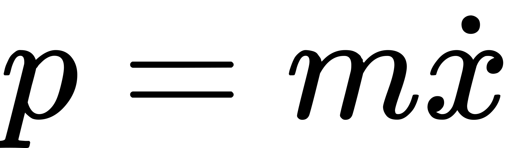
지만, 정준 운동량을 모든 모형에서 속도 자체로 바꿔 쓸 수는 없다. 좌표가 위치이면 의 단위는 kg·m/s이고, 좌표가 각도이면 대응 운동량은 각운동량이다. [2,3]
먼저 시간을 바꾸지 않고 를
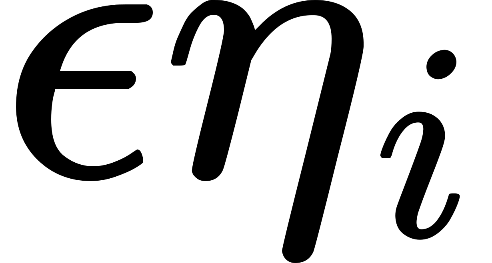
만큼 바꾸자. 은 작은 변환 매개변수이고 는 그 변환이 좌표를 바꾸는 방향과 크기를 정한다. 는 좌표와 같은 단위를 갖는다. 대칭의 조건으로 라그랑지안의 일차 변화가
은 작은 변환 매개변수이고 는 그 변환이 좌표를 바꾸는 방향과 크기를 정한다. 는 좌표와 같은 단위를 갖는다. 대칭의 조건으로 라그랑지안의 일차 변화가  인 경우까지 허용한다. 이 항을 적분하면
인 경우까지 허용한다. 이 항을 적분하면 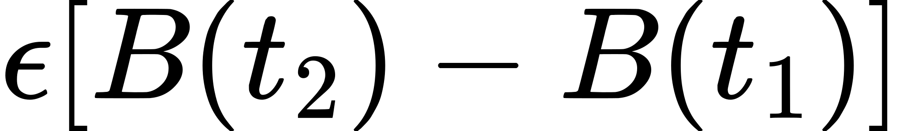
만 남으므로, 작용이 끝점에서만 달라져도 된다는 뜻이다. 운동방정식을 대입해 정리하면 다음을 얻는다.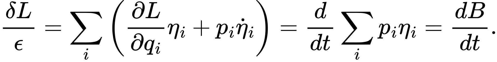
따라서
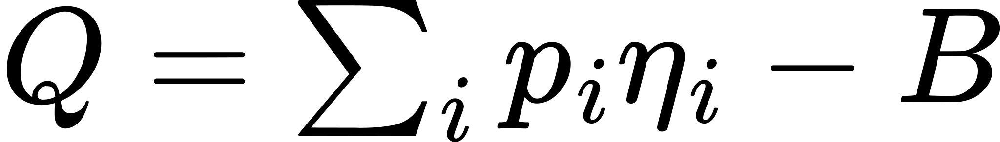
의 시간 미분은 0이다. 이는 해를 따라 성립한다. 대칭 변환에서 작용의 변화가 경계에만 남는다는 조건과, 운동방정식에서 나타나는 전미분이 만나 보존량을 만든 것이다. 라그랑지안 자체가 한 글자도 변하지 않아야 한다는 요구보다 넓다. [2,3]시간까지 함께 바꾸면 식에 한 항이 더 들어간다.  ,
,  라고 정의하고, 변환한
라고 정의하고, 변환한  의 일차 변화가
의 일차 변화가
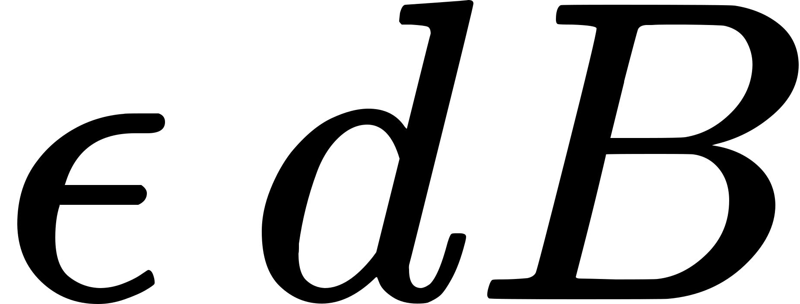
라고 하자. 여기서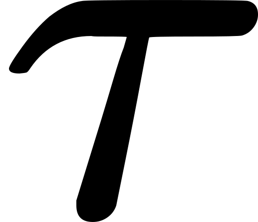
는 작은 시간 변화를 정한다. 매개변수의 단위는 변환마다 선택하며, 는 시간, 는 좌표,
는 시간, 는 좌표,  는 작용의 단위를 갖는다. 해밀토니안(Hamiltonian)이
는 작용의 단위를 갖는다. 해밀토니안(Hamiltonian)이  일 때 아래의 보존량을 얻는다.
일 때 아래의 보존량을 얻는다.
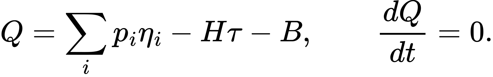
공간 병진에서는  이고 일정한 방향의 운동량을 얻는다. 회전에서는
이고 일정한 방향의 운동량을 얻는다. 회전에서는  를 넣어
를 넣어  와 연결한다. 시간 병진을
와 연결한다. 시간 병진을  으로 잡으면
으로 잡으면  다. 전체 부호는 변환 방향의 관례이며, 보존되는 에너지는
다. 전체 부호는 변환 방향의 관례이며, 보존되는 에너지는  로 표현하면 된다. 일반적인 라그랑지안에서 가 일상적인
로 표현하면 된다. 일반적인 라그랑지안에서 가 일상적인  와 같은지는 별도로 확인한다. [3]
와 같은지는 별도로 확인한다. [3]
구동되는 용수철은 조건의 의미를 잘 보여 준다.
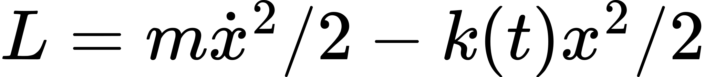
에서는 강성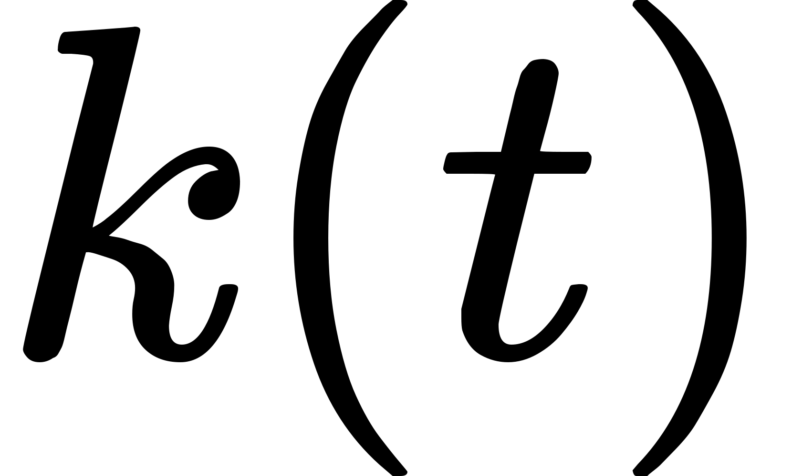
가 외부에서 변한다. 운동방정식을 만족하는 운동에 대해 다음이 성립한다.
SI 단위로  는 N/m이고 오른쪽은 일률 W다. 에너지 변화는 외부 구동과 일관된다. 강성을 조절하는 장치까지 포함하면 더 큰 계의 에너지 교환을 기술해야 한다. 이를 단순히 ‘에너지 보존 위반’이라고 부르면 계의 경계를 놓치게 된다.
는 N/m이고 오른쪽은 일률 W다. 에너지 변화는 외부 구동과 일관된다. 강성을 조절하는 장치까지 포함하면 더 큰 계의 에너지 교환을 기술해야 한다. 이를 단순히 ‘에너지 보존 위반’이라고 부르면 계의 경계를 놓치게 된다.
4. 노터의 두 정리는 무엇이 다른가
용수철에서는 하나의 기계계의 에너지를 추적했지만, 공간에 퍼진 전하나 유체에서는 영역의 경계를 넘어 물질과 에너지가 흐를 수 있다. 이때 보존량은 밀도와 흐름으로 나눠 쓴다. 전하 밀도를
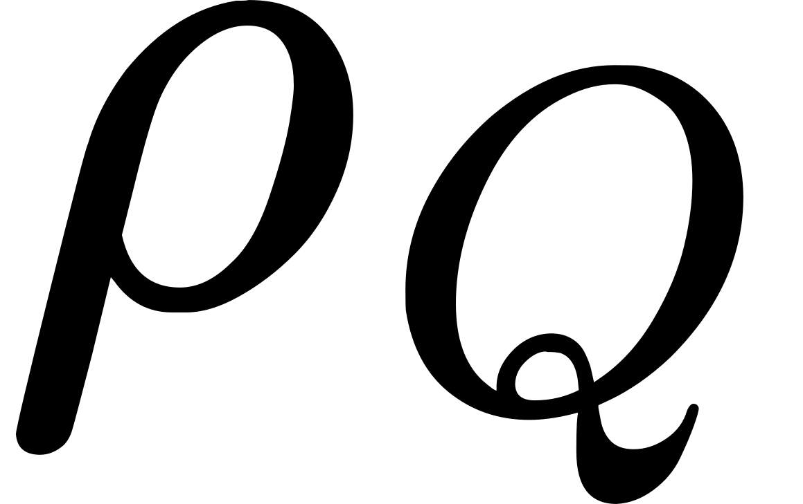
, 전류 밀도를 라 하면 국소 보존식과 유한 영역
라 하면 국소 보존식과 유한 영역  의 전하
의 전하  는 다음을 만족한다.
는 다음을 만족한다. 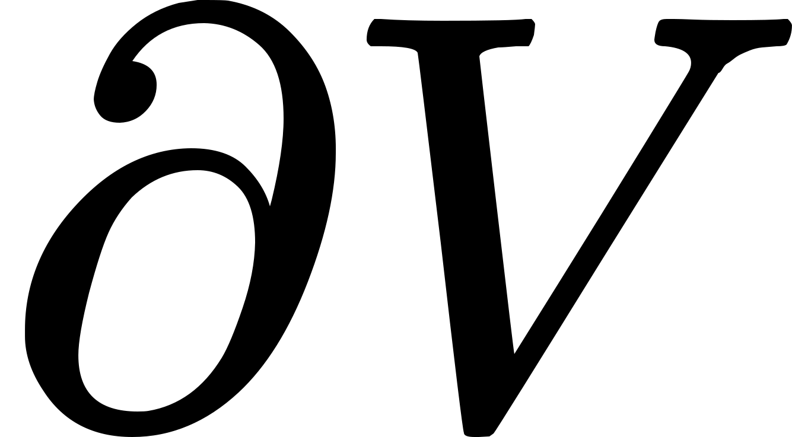
는 영역의 경계이고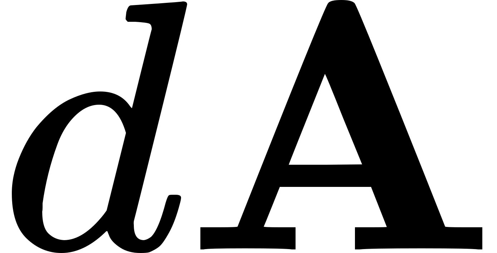
는 바깥쪽을 향하는 면적 벡터다.
전하의 경우 는 C/m³, 는 A/m²이며 표면 적분은 A다. 지역 안의 전하가 줄어도 그만큼 밖으로 흘렀다면 보존식은 정확히 성립한다. 제1정리도 장 이론에서는 이런 국소 연속방정식을 준다. 전체 적분을 일정한 보존량으로 쓰려면 유출과 경계조건을 확인해야 한다. [4]
두 정리의 구별은 ‘전체 공간인가 작은 공간인가’에 있지 않다. 제1정리는 이동 거리나 회전각처럼 상수 매개변수로 기술하는 연속 대칭을 다룬다. 제2정리는 변환 매개변수를 시공간의 임의 함수로 허용하는 국소 대칭을 다루며, 운동방정식들 사이의 미분 항등식을 준다. 이 항등식은 운동방정식을 푼 뒤에만 성립하는 관계가 아니다. [2]
전자기학에서는 같은 전기장과 자기장을 서로 다른 퍼텐셜로 표현할 수 있다. 이런 표현의 변환이 게이지 변환(gauge transformation)이다. 일반상대론에서 같은 시공간을 다른 좌표로 기술하는 자유도 제2정리의 배경이 된다. 같은 물리 상태에 여러 표현이 대응하므로 방정식 전체가 서로 독립적이지 않다. 전자기 전하를 설명할 때도 물질장의 전역 위상 대칭에서 얻는 전류, 국소 게이지 불변성이 주는 제약, 경계에 정의하는 전하를 구분해야 한다. 국소 게이지 자유도 하나하나를 새로운 독립 보존량으로 세지는 않는다. [2,4,5]
아래 도표의 1–3번 상자를 위에서 아래로 읽으면 제1정리에서 영역의 보존량까지 이어지는 조건을 볼 수 있다. 작용의 대칭에서 출발하더라도 실제 운동이 방정식을 만족해야 보존식을 얻고, 선택한 영역의 총량이 일정하려면 경계의 순유출도 없어야 한다. 맨 아래 별도 상자는 제2정리가 주는 방정식 사이의 항등식을 설명한다. ‘국소 보존식’의 국소성과 ‘국소 대칭’의 국소성은 같은 뜻으로 쓰인 것이 아니다.

5. 팽창하는 우주의 빛은 왜 에너지를 잃는가
경계와 대칭을 구별하는 일은 원 기사가 강조한 일반상대론의 에너지 문제에서도 중요하다. 에너지–운동량 텐서
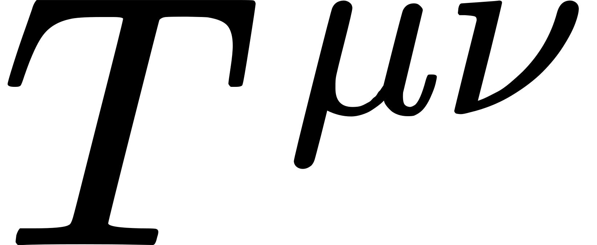
는 위치마다 물질의 에너지·운동량 밀도와 그 흐름, 압력 등을 함께 담는 양이다. 일반상대론에서도 이는 운동방정식과 함께 공변 보존식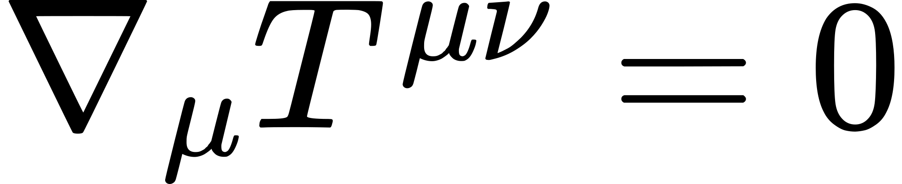
을 만족한다. 여기서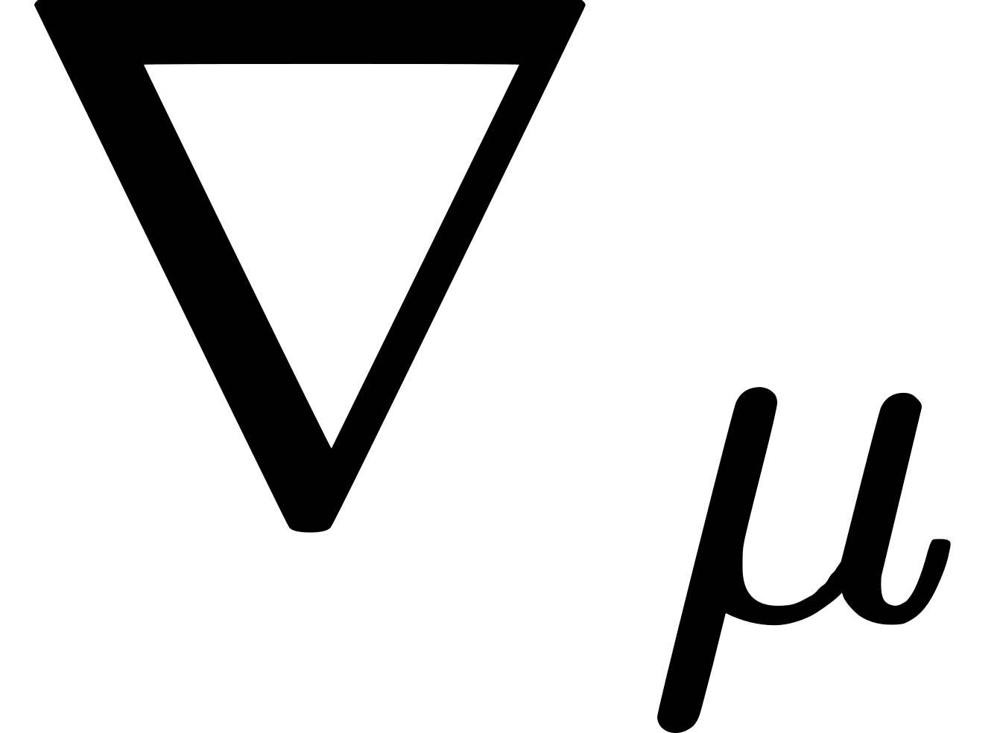
는 시공간의 휘어짐을 반영해 변화와 흐름을 비교하는 미분이다. 이 국소 관계를 우주 전체의 에너지를 단순 합산한 값이 일정하다는 주장과 동일시할 수는 없다. [6]전역적으로 보존되는 에너지를 표준적인 방식으로 만들려면 적절한 시간 대칭과 경계조건이 필요하다. 시간꼴 킬링 벡터(timelike Killing vector)는 그 방향으로 시간을 옮겨도 시공간의 기하가 달라지지 않는다는 대칭을 나타낸다. 일반적인 팽창 우주에서는 이런 전역 시간 병진 대칭을 기대할 수 없다. 한편 고립계의 점근적 조건이나 다른 기하학적 조건을 이용한 에너지 정의도 있으므로, ‘곡률이 있으면 어떤 에너지도 정의할 수 없다’는 결론 역시 과하다. [6]
균질·등방 우주의 국소 보존식을 보면 팽창과 광자의 적색편이가 어떻게 연결되는지 알 수 있다. 빛의 속도를 1로 놓은 단위계에서 에너지 밀도를
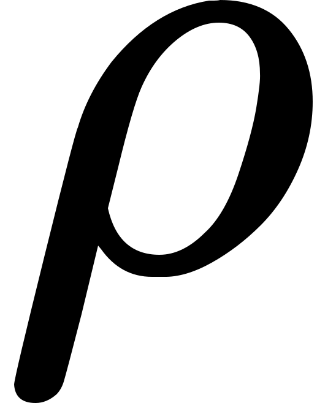
, 압력을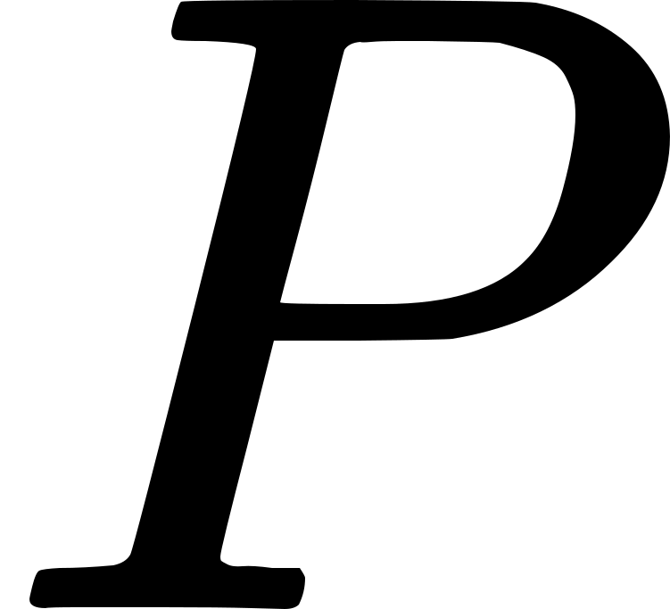
, 우주의 척도인자를 라 쓰자. 팽창을 따라 움직이는 두 지점 사이의 거리는 에 비례한다. 다른 성분과 에너지를 교환하지 않는 성분에는 다음 관계가 성립한다.
라 쓰자. 팽창을 따라 움직이는 두 지점 사이의 거리는 에 비례한다. 다른 성분과 에너지를 교환하지 않는 성분에는 다음 관계가 성립한다.

고정된 공변 부피는 팽창하는 좌표계에서 같은 지점들로 둘러싼 영역으로, 실제 물리 부피는  에 비례해 늘어난다. 두 번째 식의
에 비례해 늘어난다. 두 번째 식의
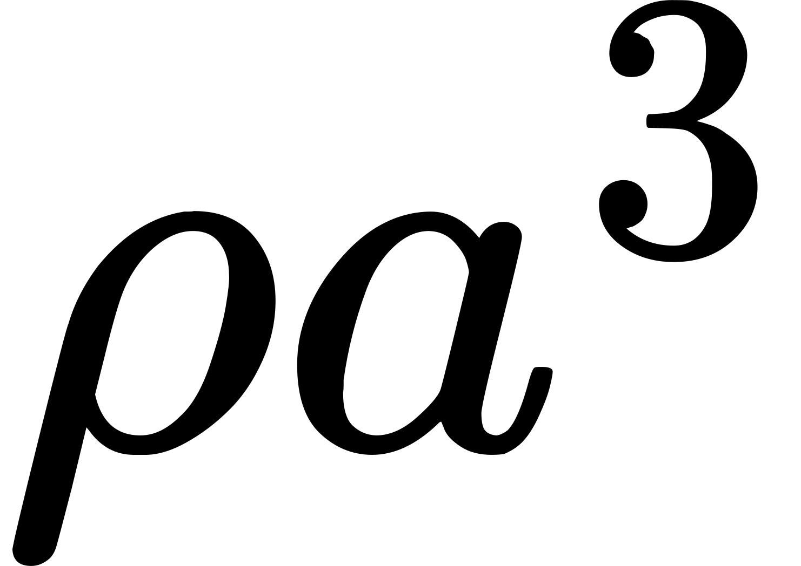
는 그 영역 안 성분의 에너지에 비례하며, 압력과 부피 변화가 그 에너지 변화에 어떻게 대응하는지 보여 준다. 다른 성분과 에너지를 교환하지 않는 복사는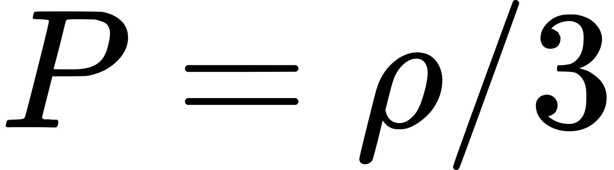
이므로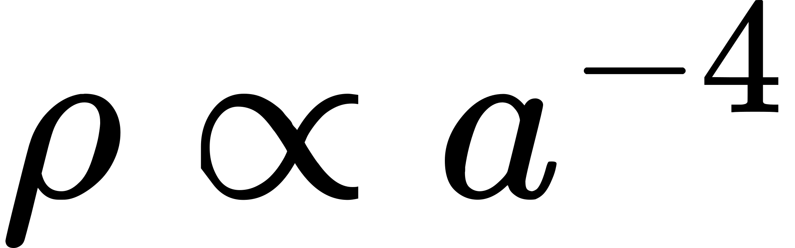
다. 이 가운데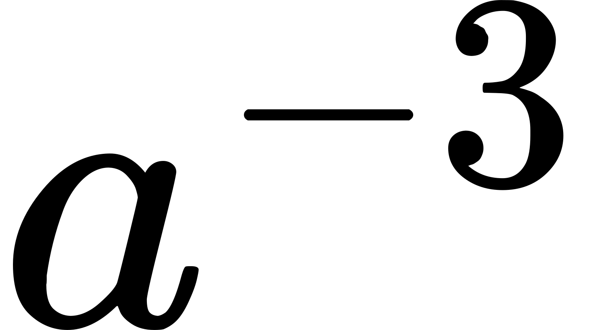
은 부피 증가에 따른 희석이고, 나머지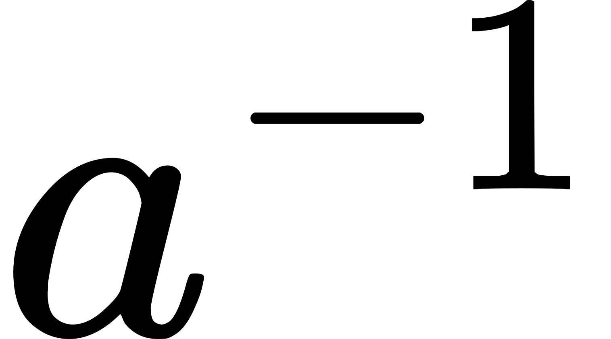
은 자유롭게 전파하는 광자의 에너지가 팽창을 따라 움직이는 공변 관측자에게 점점 작게 측정되는 효과다. 이는 국소 공변 보존식과 양립하며 가속 팽창을 전제로 하지도 않는다. 국소적인 에너지 흐름을 기술하는 식이 성립하는지와 우주 전체의 보존 에너지를 정의할 수 있는지는 다른 질문이다. 우주의 적색편이를 실험실의 닫힌 계에서 임의로 에너지를 만들 수 있다는 주장으로 옮길 수는 없다. [6]6. 수치 시뮬레이션에서는 대칭을 어떻게 남길까
앞에서는 물리 모형에 어떤 보존법칙이 성립하는지 물었다. 이제 그 방정식을 컴퓨터로 계산해도 같은 관계가 남는지 물을 차례다. 컴퓨터는 유한한 시간 간격으로 상태를 갱신하므로, 연속시간의 법칙이 정확해도 이산화 과정에서 오차가 생긴다. 도입의 용수철로 돌아가 그 차이를 직접 계산해 보자.
질량
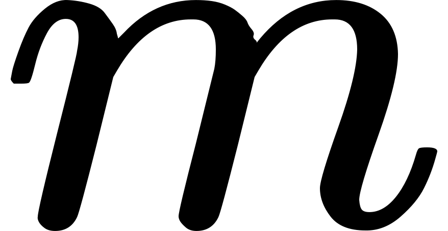
, 고정된 강성, 고유 각진동수 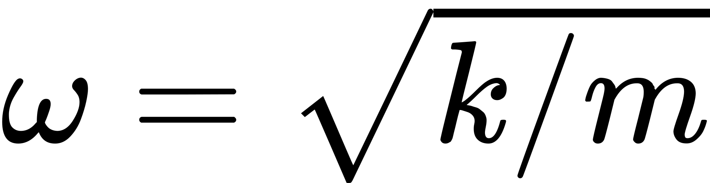
인 조화진동자를 택한다. 초기 진폭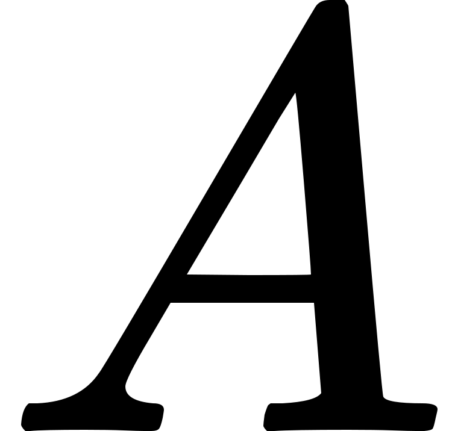
를 고정된 기준 길이로 삼아 위치를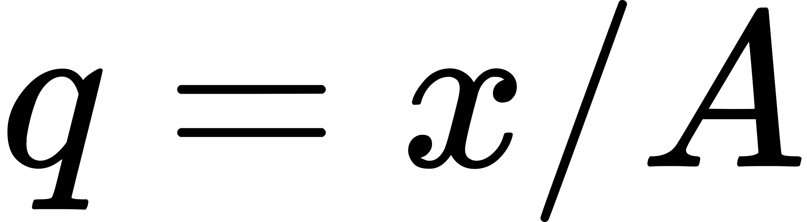
, 정준 운동량을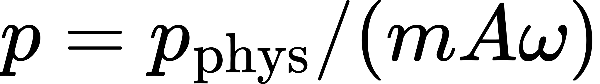
로 나타낸다. 이 질점에서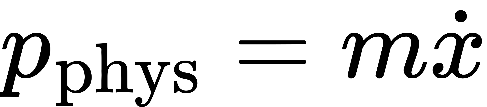
이므로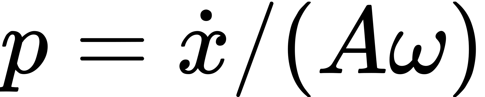
이지만, 이 관계를 일반적인 모형의 운동량과 속도에 그대로 적용할 수는 없다. 이 절에서는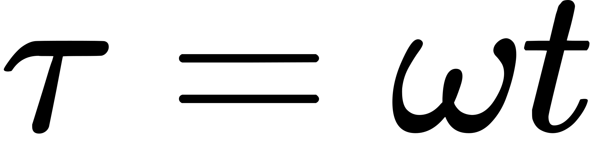
를 무차원 시간으로 쓴다. 앞 절의 대칭 변환을 나타내던 와 역할이 다르다. 시간 간격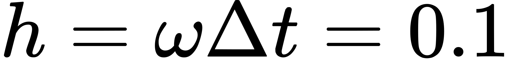
도 무차원 수이며 0.1초를 뜻하지 않는다.실제 에너지를
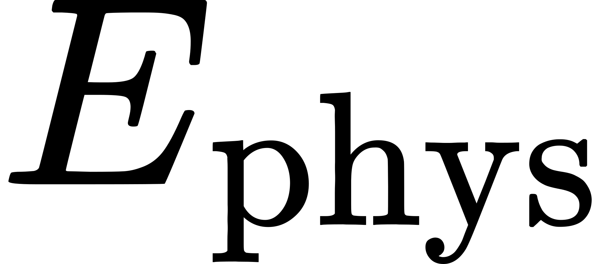
라 하면 무차원 해밀토니안은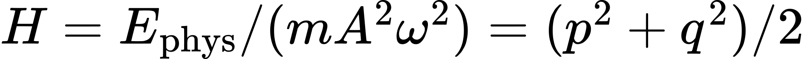
다.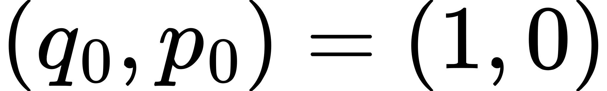
에서 시작한 정확한 운동에서는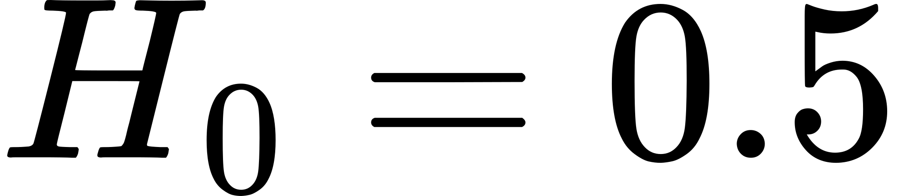
가 일정하며, 이 0.5는 줄(J) 단위의 에너지가 아니다. 아래 그림의 에너지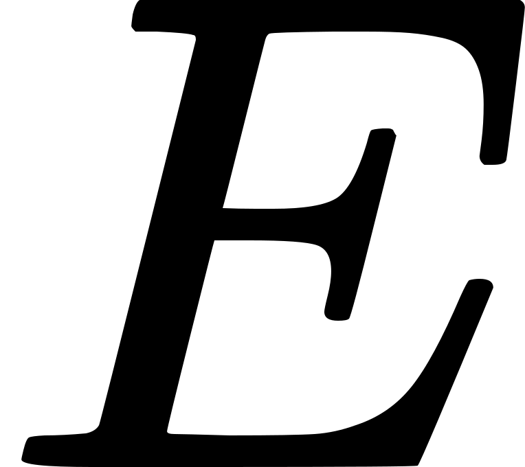
는 이 무차원에 해당하고, 비율 는 실제 에너지의 비율 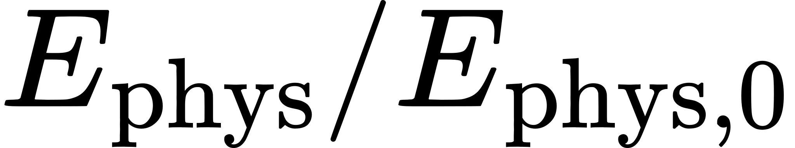
과도 같다. 위치와 운동량 한 쌍을 한 점으로 나타낸 위상 평면(phase plane)에서는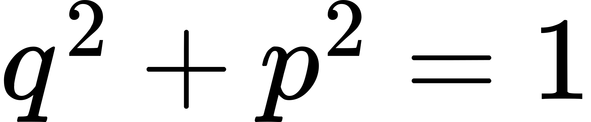
이라는 원 위에 상태가 놓인다. 이 원은 같은 에너지의 상태를 모은 선이며, 질점이 실제 공간에서 원을 그리며 움직인다는 뜻은 아니다.전진 오일러(forward Euler) 방법은 현재 상태에서 계산한 변화율을 한 시간 간격 동안 적용해 다음 상태를 근사한다.
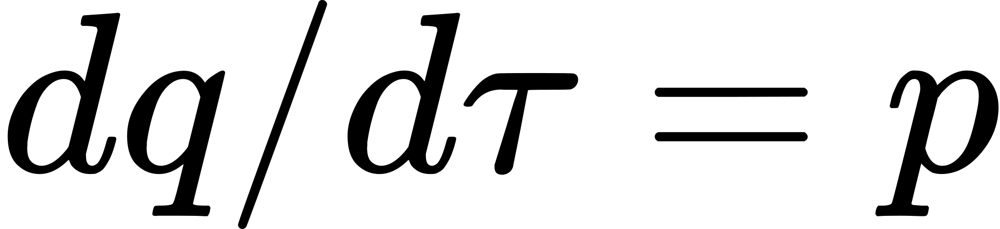
,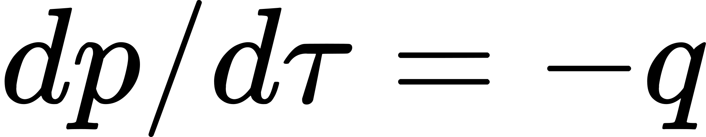
를 쓰면 두 갱신식은 다음과 같다. 두 식의 오른쪽에는 모두 갱신 전의 값이 들어간다.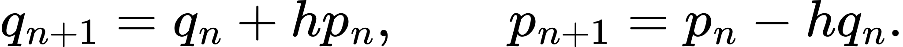
첫 상태
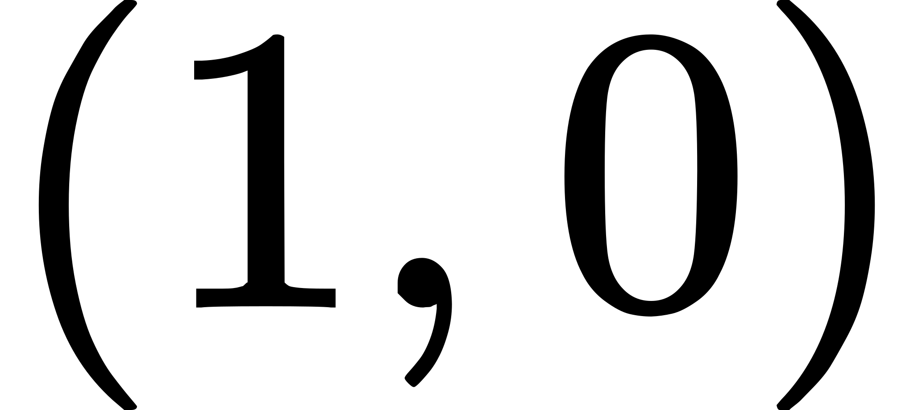
은 로 옮겨진다. 이 점은 단위원 바깥에 있고, 계산한 에너지는 0.5에서 0.505로 1% 증가한다. 변화율은 원의 접선 방향이지만 유한한 직선 한 걸음의 끝은 같은 에너지의 원 위에 남지 않는 것이다. 이는 한 번의 수치 갱신이며, 그 직선을 질점이 실제로 지나간 경로로 해석해서는 안 된다. 두 갱신식을 에너지에 대입하면 교차항이 상쇄되어 증가율을 정확히 구할 수 있다.이 근사에서는 같은 1% 증가가 매번 반복된다. 2,000단계 뒤 이다. 외부에서 에너지를 주지 않았는데도 계산이 에너지를 계속 늘리는 이유가 갱신식 자체에서 드러난다.
이런 문제를 다루는 한 접근이 변분 적분기(variational integrator)다. 운동방정식을 직접 이산화하는 대신 작용을 이산화하고 거기서 갱신식을 유도한다. 이산 라그랑지안이 해당 대칭을 유지하면 이산 노터 정리에 따라 대응 운동량을 보존한다. 정칙성 등 적절한 조건에서는 심플렉틱(symplectic) 구조도 유지한다. 이 한 자유도 계에서는 이웃한 상태들이 이루는 위상 평면의 작은 영역이 한 단계 뒤에도 같은 넓이를 유지하는 것으로 이해할 수 있다. 자유도가 많을 때는 단순히 전체 부피만 유지한다는 조건보다 강한, 정준 좌표와 운동량 쌍 사이의 기하적 관계를 보존한다. Marsden과 West는 분자동역학의 Verlet 같은 방법을 이 관점에서 연결한다. [7]
이 기하를 보존해도 각 상태의 원래 에너지가 매 단계 정확히 같아지는 것은 아니다. 고정 시간 간격의 심플렉틱 방법에서는 에너지가 작게 진동할 수 있으며, 일정한 정칙성·안정성 조건에서 그 오차가 장시간 잘 제어된다. 따라서 보존하는 운동량, 보존하는 기하, 실제 에너지 오차의 거동을 각각 확인해야 한다. [7]
이 진동자에 쓰는 심플렉틱 오일러는 운동량을 먼저 갱신하고 그 새 값으로 위치를 갱신한다. 속도 벨레(velocity Verlet)는 현재 힘으로 운동량을 반 단계 바꾼 뒤, 그 값으로 위치를 한 단계 계산한다. 이어 새 위치의 힘으로 운동량의 나머지 반 단계를 계산한다. 전진 오일러와 달리 갱신 중 얻은 새 정보를 다음 계산에 사용하며, 이 순서의 차이가 아래 에너지 오차의 거동으로 나타난다.
아래 그림은 같은 초기 상태와 , 2,000단계에서 세 방법의 에너지 변화를 비교한다. 먼저 위 패널의 세로축 에서 1이 초기 에너지와 같은 값이라는 점을 확인하자. 로그 눈금의 같은 간격은 같은 차이가 아니라 같은 배수에 대응하며, 전진 오일러의 큰 증가를 함께 볼 수 있게 한다. 이어 아래 패널에서는 세로축을 선형 눈금으로 확대해 심플렉틱 오일러와 velocity Verlet이 1에서 얼마나 벗어나는지 읽는다. 아래 축도 이며 상대 오차의 %축으로 바뀐 것은 아니다. 가로축은 , 즉 고유 각진동수의 역수로 잰 시간이다.
에 해당하며, 초기 에너지로 나눈 비율 를 표시한다. 이 비율은 물리 단위를 복원해도 같다. 위는 로그 눈금, 아래는 두 구조 보존 방법의 작은 변화를 확대한 선형 눈금이다. 동일 시간 간격의 교육용 비교이며 계산시간·정확도를 맞춘 성능 벤치마크나 논문 재현은 아니다. 원자료와 갱신식은 동봉한 계산 스크립트로 생성했다.아래 곡선의 1로부터의 차이를 초기 에너지에 대한 비율로 읽으면, 이 구간에서 최대 절대 상대 에너지 오차는 심플렉틱 오일러 약 5.26%, velocity Verlet 약 0.25%다. 두 방법의 에너지는 제한된 범위에서 오르내렸고 전진 오일러처럼 계속 증가하지 않았다. 같은 방정식에서도 계산 방법이 오차의 누적을 바꾼다는 뜻이다. 이 수치는 선택한 진동자와 시간 간격의 결과이며, 작은 에너지 오차만으로 진동의 타이밍까지 정확하다거나 모든 심플렉틱 방법이 모든 다른 방법보다 우수하다고 결론 내릴 수는 없다.
같은 설계 문제는 입자와 장을 함께 계산할 때도 나타난다. 입자-격자(particle-in-cell) 방법은 입자의 운동과 격자 위 전자기장을 결합해 플라스마를 계산한다. Xiao 등의 Vlasov–Maxwell 연구는 입자와 전자기장의 이산 라그랑지안, 게이지 불변성, 비정준 심플렉틱 구조를 함께 설계한다. 연구진은 전하 보존을 유지하는 알고리즘을 구성하고, 플라스마 파동의 감쇠와 전파를 다루는 비선형 Landau 감쇠·전자 Bernstein 파동 사례로 검증했다. 이는 장시간 플라스마 계산의 구체적 방법론이며, 해당 결과만으로 핵융합 장치의 제어 성능까지 판단할 수는 없다. [8]
7. 과학 AI는 보존법칙을 학습할까, 구조로 가질까
앞에서는 이미 아는 방정식을 어떻게 계산하는지 비교했다. 이제 방정식을 정하는 함수 자체를 데이터로 배운다면 무엇이 달라질까? 일반 신경망으로 위치와 속도의 다음 값을 예측하면, 데이터에 보존 운동이 많더라도 보존법칙이 정확하게 내장되지는 않는다. 해밀토니안 신경망(Hamiltonian Neural Network, HNN)은 에너지에 해당하는 스칼라 함수  를 학습하고, 그 미분으로 운동을 정한다. 는 신경망 매개변수다. 이 절의
를 학습하고, 그 미분으로 운동을 정한다. 는 신경망 매개변수다. 이 절의  는 일반적인 정준 좌표와 운동량이며, 앞 진동자의 무차원 변수와 같은 수치가 된다고 가정하지 않는다. 학습한 함수에서 위치와 운동량의 시간 변화율을 얻는 관계는 해밀턴 방정식(Hamilton's equations), 또는 정준 운동방정식이다. [9]
는 일반적인 정준 좌표와 운동량이며, 앞 진동자의 무차원 변수와 같은 수치가 된다고 가정하지 않는다. 학습한 함수에서 위치와 운동량의 시간 변화율을 얻는 관계는 해밀턴 방정식(Hamilton's equations), 또는 정준 운동방정식이다. [9]
시간에 명시적으로 의존하지 않는 매끄러운 라면, 두 변화율을 에 대입했을 때 두 항이 상쇄되어 연속시간에서는 0이 된다. 여기서 보존되는 것은 학습된 함수다. 이를 실제 계산으로 옮기려면 함수 학습, 해밀턴 방정식으로 얻은 연속 운동, 한 단계씩 진행하는 수치 적분을 나누어 보아야 한다. 가 실제 에너지를 잘못 배워도 그 함수 자체는 보존될 수 있고, 연속 운동에서 보존되더라도 앞 절처럼 적분 오차가 생길 수 있다. 정준 좌표와 운동량의 대응이 맞는지도 별도 조건이다. 원 연구는 스프링·진자·이체 운동과 영상 기반 예시를 사용했으며, 마찰을 다루려면 추가 모델링이 필요하다고 명시한다. [9]
라그랑지안 신경망(Lagrangian Neural Network, LNN)은 좌표와 속도에서 를 학습한 뒤 오일러–라그랑주 방정식으로 운동을 구한다. 정준 운동량을 직접 알기 어려울 때 장점이 있다. 다만 학습한 식에서 가속도를 유일하게 풀려면, 속도에 대한 이차 미분을 모은 헤세 행렬(Hessian)이 비특이해야 한다. 시간 의존성, 제약과 소산을 어떻게 포함하는지도 중요하다. 원 논문은 이중 진자, 상대론적 입자, 1차원 파동방정식 등을 제시한 2020년 워크숍 연구다. 이 예시만으로 산업용 디지털 트윈의 신뢰성을 보장할 수는 없다. [10]
이 접근의 실용적 가치는 학습할 함수와 운동 사이의 관계를 물리에 맞게 제한하는 데 있다. 이때 관측하는 자유도가 마찰, 반응, 환경이나 외부 구동과 에너지를 주고받는데 그 교환을 생략한 보존 모형을 강제하면 잘못된 운동을 얻는다. 화학반응 자체가 닫힌 전체 계의 에너지 보존을 없애는 것은 아니다. 어떤 에너지를 모형 안에 포함했는지 정하고, 필요한 일·열의 전달, 소산과 제어 입력을 넣어 관측되는 변화를 설명해야 한다.
8. 등변 신경망과 원자간 퍼텐셜의 연결
에너지를 정하는 함수를 배웠더라도 공간 방향에 대한 관계가 맞는지는 따로 확인해야 한다. 도입에서 물었던 분자 회전이 그 예다. 외부에서 선호하는 방향이 없는 분자 전체를 회전하면 에너지 값은 같고 힘 벡터는 분자와 함께 돌아가야 한다. 값이 그대로인 성질은 불변성(invariance), 입력의 회전이 출력 벡터의 같은 회전으로 이어지는 성질은 등변성(equivariance)이다. 원자 위치들을 , 회전 행렬을  이라 쓰면 목표는
이라 쓰면 목표는  , 다. 방향을 가진 외부장이나 기판이 있다면 그 환경도 함께 변환하거나 대칭 조건을 조정해야 한다.
, 다. 방향을 가진 외부장이나 기판이 있다면 그 환경도 함께 변환하거나 대칭 조건을 조정해야 한다.
NequIP은 이런 공간 대칭에 맞는 표현을 사용하는 원자간 퍼텐셜 모델이다. 연구진은 물, 비정질 물질, 계면과 이온 전도체 등의 계에서 데이터 효율과 예측 성능을 평가했다. 여기서 힘이 올바른 방향으로 변환되는 것과 그 힘이 퍼텐셜에너지에서 나오는 것은 다른 조건이다. NequIP은 먼저 원자 배치의 총 퍼텐셜에너지 를 예측하고, 원자 의 위치에 대한 음의 기울기로 힘을 계산한다. [11]

이렇게 미분 가능한 단일 에너지 함수에서 얻는 힘은, 원래 자리로 돌아오는 경로에서 한 일의 합이 0인 보존적 힘장을 이룬다. 그 에너지가 고립계의 공통 병진과 회전에 불변이면 총힘과 총토크가 0이라는 제약도 따른다. 벡터를 등변하게 변환하는 조건만으로 그 벡터장이 어떤 에너지의 기울기인지까지 보장되지는 않는다. 따라서 에너지의 불변성, 힘의 등변성, 에너지 미분으로 힘을 얻는 관계를 구별해야 한다. 이 조건들을 갖춰도 실제 분자동역학의 총에너지 거동은 시간 간격과 적분기, 환경과 열을 교환하게 하는 온도조절기의 설정에도 달려 있다. [11]
OLED·분자재료 연구로 연결한다면, 먼저 전자 바닥상태 퍼텐셜에서의 구조·열적 운동을 평가하는 과제가 자연스럽다. 여기상태, 전하이동, 스핀–궤도 결합, 비단열 전이, 발광 수명은 추가 물리와 검증이 필요하다. 이 연결은 리뷰의 적용 제안이며 NequIP 원 논문이 OLED 소자의 효율이나 수명을 검증했다는 뜻은 아니다.
9. 양자계산에서는 대칭이 오류를 가려낸다
앞의 방법들은 대칭을 만족하는 모형과 계산을 설계했다. 이미 계산한 결과에서 대칭이 어긋난 성분을 찾는 데도 같은 생각을 쓸 수 있다. 양자계에서는 관측량을 나타내는 연산자가 해밀토니안과 교환하고, 그 연산자에 명시적 시간 의존성이 없으면 닫힌 계의 시간 진화에서 그 양이 보존된다. ‘교환한다’는 것은 두 연산을 적용하는 순서를 바꿔도 결과가 같다는 뜻이다. 이 관계로 계산이 유지해야 할 입자수나 대칭 부분공간을 정하고 결과를 검사할 수 있다. 허용된 상태의 범위를 좁히는 효과와 계산 전체가 더 빨라지는 효과는 각각 평가해야 한다. [4,12]
Sagastizabal 등의 2019년 연구는 초전도 회로 양자전기역학(circuit QED) 프로세서의 두 큐비트로 수소 분자의 바닥상태를 추정하면서 패리티(parity) 대칭을 검증했다. 여기서 패리티는 두 큐비트의 여기 개수가 짝수인지 홀수인지를 , 로 구별하는 이산 대칭의 표지다. 목표 상태는 홀수 패리티 부분공간에 있어야 하는데, 큐비트 이완과 잔여 여기는 그 밖의 성분을 만든다. 연구진은 측정한 파울리 연산자의 기대값으로 상태와 에너지를 추정하고, 목표 부분공간에 해당하는 값으로 후처리해 오차를 줄였다. 이는 실제 소규모 양자 장치의 실험이며, 매 실행에서 별도 패리티 측정으로 표본을 직접 버리는 절차와 구분해야 한다. [12]
이 선택의 뜻은 사영(projection)으로 나타낼 수 있다. 사영 연산자 는 상태에서 목표 부분공간의 성분을 고르고, 밀도행렬 는 잡음까지 포함한 양자 상태를 기술한다. 이상적으로 사영에 성공한 경우의 조건부 상태와 그 확률은 다음과 같다.
위 식의 는 고른 성분이며, 이를  로 나누어 전체 확률을 다시 1로 맞춘다. 독립 표본을 실제로 선별하고 성공 확률이 인 이상적인 절차라면, 같은 수의 유지 표본을 얻는 데 평균적으로 약 배의 시도가 필요하다. 이는 직접 선별의 비용을 설명하는 교육용 관계이며, 위 실험의 측정 비용을 그대로 나타내는 식은 아니다. 논문에서는 필요한 파울리 기대값을 후처리하며, 이 수소 분자 해밀토니안의 패리티 검증에는 원래 에너지 추정에 필요한 항 외에 추가 측정항이 필요하지 않았다. 측정항의 수가 같아도 통계 오차와 추정량의 분산은 별도로 평가해야 한다. 목표 부분공간 안에 남는 오류는 이 검사만으로 찾지 못한다. [12]
로 나누어 전체 확률을 다시 1로 맞춘다. 독립 표본을 실제로 선별하고 성공 확률이 인 이상적인 절차라면, 같은 수의 유지 표본을 얻는 데 평균적으로 약 배의 시도가 필요하다. 이는 직접 선별의 비용을 설명하는 교육용 관계이며, 위 실험의 측정 비용을 그대로 나타내는 식은 아니다. 논문에서는 필요한 파울리 기대값을 후처리하며, 이 수소 분자 해밀토니안의 패리티 검증에는 원래 에너지 추정에 필요한 항 외에 추가 측정항이 필요하지 않았다. 측정항의 수가 같아도 통계 오차와 추정량의 분산은 별도로 평가해야 한다. 목표 부분공간 안에 남는 오류는 이 검사만으로 찾지 못한다. [12]
패리티는 연속적으로 조금씩 바꾸는 대칭이 아니므로 이 사례를 노터 제1정리의 직접 적용이라고 부를 수는 없다. 여기까지의 연결은 대칭을 모형과 알고리즘의 제약으로 정하고, 그 제약을 결과 검증에도 활용한다는 것이다. 이 작은 장치의 검증 결과가 오류정정의 완전한 대체나 양자 우위를 입증하는 것도 아니다.
10. 대칭이 ‘깨진다’는 세 가지 다른 상황
그렇다면 계산에서 기대한 보존량이 달라지거나 대칭 검사에 실패했을 때 무엇을 뜻할까? 모형의 조건이 바뀐 것과 수치·장치의 오차를 구별하려면 물리학에서 말하는 대칭 깨짐의 서로 다른 뜻부터 나누어야 한다.
첫째는 명시적 깨짐이다. 라그랑지안에 특정 방향의 외부장이나 시간 의존 구동을 넣어 해당 대칭을 없앤다. 보존량 변화에는 그 항이 주는 힘·토크·일률이 나타난다. 앞서 강성을 바꾼 용수철이 예다.
둘째는 자발적 깨짐(spontaneous symmetry breaking)이다. 작용과 법칙에는 정확한 대칭이 남아 있지만 선택된 바닥상태가 그 대칭을 공유하지 않는다. 이는 그 자체로 노터 전류의 비보존을 뜻하지 않는다. 원점에서 모든 방향이 동등한 퍼텐셜이라도, 원점 밖에 있는 동등한 최소점들 중 하나를 고른 상태는 특정 방향을 선택할 수 있다. 법칙과 상태의 구별이 다시 중요해진다. [13]
셋째는 양자 이상(anomaly)이다. 고전 작용에 있던 대칭이 양자 이론 전체에서는 성립하지 않는 현상으로, 가능한 경로들을 합산하는 적분의 측도와 무한대를 다루는 정칙화까지 확인해야 한다. Fujikawa의 원 연구는 경로적분 측도의 변환으로 축 이상을 설명한다. 이 축 전류의 이상을 전자기 전하가 임의로 보존되지 않는다는 주장과 혼동해서는 안 된다. 동역학적 게이지 이론의 일관성을 위해 필요한 이상 상쇄 문제도 별도로 존재한다. [14]
이 구별은 기술 검증에도 쓸모가 있다. 계산에서 기대한 보존량이 변했다면 원인이 외부 구동인지, 부분계의 유출인지, 근사 모형인지, 이산화인지부터 따져야 한다. 수치 오차를 곧바로 새로운 물리나 양자 이상으로 해석할 근거는 없다.
11. 연구와 개발에서 실제로 확인할 것
도입의 질문에 답하려면 대칭의 이름만 고르는 것으로는 부족하다. 유지해야 할 관계를 모형에 넣고, 계산한 뒤 그 관계와 실제 관측량을 대조해야 한다. 아래 표는 각 응용에서 무엇을 설계에 넣고 무엇을 결과에서 읽을지 짝지은 검토 제안이다.
| 적용하려는 문제 | 유용한 설계 선택 | 결과를 판단할 관측량 |
|---|---|---|
| 분자동역학·기계계의 장시간 적분 | 계의 대칭에 맞는 변분·심플렉틱 적분기 | 에너지 오차의 시간 변화, 총운동량, 위상 오차 |
| 데이터로 동역학 학습 | HNN·LNN과 적합한 외력·소산 항 | 미관측 궤적, 실제 에너지, 여러 시간 간격에서의 오차 |
| 원자간 퍼텐셜 학습 | 에너지 불변성, 힘의 등변성, 에너지 미분 | 회전·병진 검사, 힘 오차, 닫힌 궤적의 일, NVE 안정성 |
| 입자·전자기장 계산 | 이산 게이지 구조와 전하 연속식 유지 | 전하 잔차, 장 제약, 장시간 물리량 |
| 양자 상태·에너지 추정 | 대칭 부분공간과 검증 측정 | 에너지 편향, 유지 비율, 총 측정 횟수, 검출 불가 오류 |
표의 설계 선택은 검사할 관측량과 함께 읽어야 한다. 원자간 모델에서는 같은 배치를 통째로 옮기거나 돌린 뒤 에너지와 힘을 비교하고, 외력이 없는 고립계라면 총힘과 총토크도 검사한다. 에너지가 없는 힘 전용 모델이라면 원래 자리로 돌아오는 폐곡선에서 한 일이 0인지가 보존성을 점검하는 한 방법이다. NVE는 입자수(N)·부피(V)·에너지(E)를 고정한 고립계 조건을 뜻한다. 온도조절기 없이 진행한 NVE 계산의 에너지 오차와 진동의 타이밍 오차를 보면 적분의 성질을 더 분명히 구별할 수 있지만, 안정적인 궤적만으로 퍼텐셜이 정확하다고 판정할 수는 없다.
처음의 용수철에서 에너지가 증가한 것은 알려진 보존 운동을 근사 계산하는 과정의 문제였다. HNN에서는 배운 함수가 실제 에너지를 나타내는지도 확인해야 했고, NequIP에서는 에너지의 공간 대칭과 힘을 얻는 관계를 함께 보았다. 양자 대칭 검증은 조건을 벗어난 일부 오류를 걸러 주지만 그 안에 남는 오류는 찾아내지 못했다. 학습 오차가 작아도 힘을 적분한 운동은 어긋날 수 있고, 보존량을 정확히 유지해도 잘못된 퍼텐셜 위를 움직일 수 있다. 데이터 적합도, 대칭과 보존 관계, 수치 적분, 실험 관측량을 함께 판단해야 하는 이유다.
노터 정리는 계의 경계와 대칭 조건으로 허용되는 모형과 운동을 제한하고, 계산 결과가 그 관계를 유지하는지 묻는 기준을 준다. 보존량이 변하면 먼저 외부와의 교환을 빠뜨렸는지, 학습한 함수가 틀렸는지, 수치 적분이나 장치에 오차가 생겼는지를 구별한다. 이 기준을 고전역학과 장 이론에서 수치해석·과학 AI·양자 검증으로 옮길 때도, 각 사례가 실제로 확인한 범위 안에서 적용하는 것이 핵심이다.
참고문헌과 원문
- Wegsman, S. How Noether’s Theorem Revolutionized Physics. Quanta Magazine, 2025-02-07. 기사. 역사와 문제의식의 출발점.
- Noether, E. Invariante Variationsprobleme (1918), 235–257. M. A. Tavel 영문 번역, Transport Theory and Statistical Physics 1(3), 186–207 (1971). DOI · 영문 원문, arXiv:physics/0503066v3, 2018-05-30. 제1·2정리는 §1–2.
- Harvey Mudd College Physics 111 자료. Symmetries and Conservation Laws, Chapter 6, §6.4–6.5. 원문 PDF. Saeta 교수의 강의 웹사이트에서 제공하는 교재 장으로, PDF에 명시되지 않은 저자는 지정하지 않았다. 시간 변환·경계항을 포함한 역학 설명.
- Tong, D. Quantum Field Theory, §1.3, Symmetries and Noether’s theorem. 공식 강의 노트. 전류·전하·경계조건과 양자 이론의 배경.
- Avery, S. G.; Schwab, B. U. W. Noether’s Second Theorem and Ward Identities for Gauge Symmetries. Journal of High Energy Physics 2016, 31. arXiv:1510.07038 · DOI. 국소 대칭과 항등식, 경계의 역할.
- Tong, D. General Relativity, Chapter 4, 특히 §4.3 및 §4.5–4.6. 공식 강의 노트. 공변 보존, Killing 대칭, 에너지와 우주론.
- Marsden, J. E.; West, M. Discrete mechanics and variational integrators. Acta Numerica 10, 357–514 (2001). DOI · 저자 해설. 이산 작용, 운동량과 심플렉틱 구조.
- Xiao, J. et al. Explicit high-order non-canonical symplectic particle-in-cell algorithms for Vlasov-Maxwell systems. Physics of Plasmas 22, 112504 (2015). DOI · arXiv:1510.06972v2, 2016-03-12. 플라스마 수치계산 사례.
- Greydanus, S.; Dzamba, M.; Yosinski, J. Hamiltonian Neural Networks. NeurIPS 2019. 원문 · 학회. §2의 구조와 §3.2의 보존량 해석.
- Cranmer, M. et al. Lagrangian Neural Networks. ICLR 2020 Deep Differential Equations Workshop. arXiv:2003.04630v2, 2020-07-30 · 저자 코드. 학회 본회의 논문과 구분하는 워크숍 연구.
- Batzner, S. et al. E(3)-equivariant graph neural networks for data-efficient and accurate interatomic potentials. Nature Communications 13, 2453 (2022). DOI · 공개 원고. Methods의 에너지·힘 구성.
- Sagastizabal, R. et al. Experimental error mitigation via symmetry verification in a variational quantum eigensolver. Physical Review A 100, 010302(R) (2019). DOI · 공개 원고. 공개 원고의 제목은 Error Mitigation by Symmetry Verification on a Variational Quantum Eigensolver.
- Kaplunovsky, V. Spontaneous Symmetry Breaking, University of Texas 강의자료 (2020). 원문 PDF. 법칙·바닥상태의 대칭과 보존 전류.
- Fujikawa, K. Path-Integral Measure for Gauge-Invariant Fermion Theories. Physical Review Letters 42, 1195–1198 (1979). DOI·원문. 축 이상과 적분측도. Tong, Gauge Theory §3.2–3.4는 이상과 상쇄의 보충 설명.